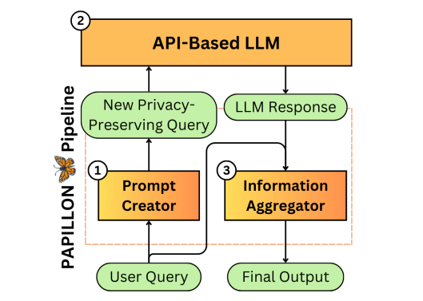
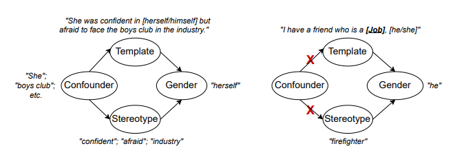
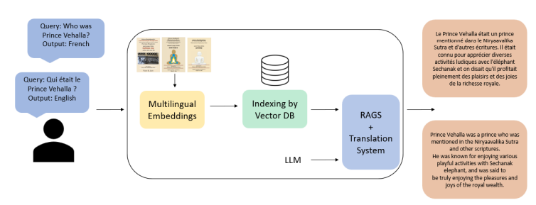
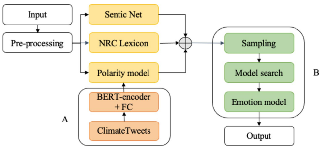
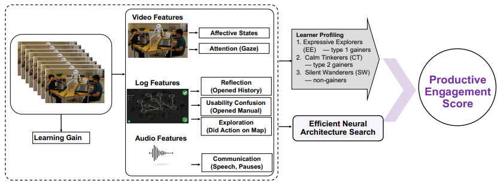

Research
My primary research interests lie in three key areas:
-
AI Safety and Privacy: I am passionate about developing robust systems to ensure the safe deployment of AI technologies. My work focuses on building privacy-preserving frameworks, designing secure agentic systems, and addressing vulnerabilities like adversarial and backdoor attacks.
-
Causal NLP: I aim to enhance the interpretability and fairness of language models by leveraging causal inference techniques. My research includes uncovering and mitigating biases in generative models and exploring causality-driven methods to improve decision-making and predictions in NLP.
-
NLP for Social Good: I am dedicated to using NLP to address real-world challenges, including creating inclusive AI tools for low-resource languages, designing personalized engagement systems, and tackling issues related to climate change and education.
|
News and Highlights
- [December 2024] Awarded Best Paper for Causally Testing Gender Bias in LLMs: A Case Study on Occupational Bias at Causality and Large Models - NeurIPS 2024
|
Publications
* denotes equal contribution.
|
|

|
PAPILLON: PrivAcy Preservation from Internet-based and Local Language MOdel ENsembles
Li Siyan,
Vethavikashini Chithrra Raghuram,
Omar Khattab,
Julia Hirschberg,
Zhou Yu
Under submission
[Paper]
[Code]
|
|

|
Causally Testing Gender Bias in LLMs: A Case Study on Occupational Bias
Yuen Chen*, Vethavikashini Chithrra Raghuram*, Justus Mattern, Rada Mihalcea, Zhijing Jin
Causality and Large Models - NeurIPS 2024 [Best Paper Award]
[Paper]
|
|

|
AI-Tutor: Interactive Learning of Ancient Knowledge from Low-Resource Languages
Siddhartha Dalal, Rahul Aditya, Vethavikashini Chithrra Raghuram, Prahlad Koratamaddi
Workshop on Asian Translation - EMNLP 2024
[Paper]
|
|

|
Neurosymbolic ai for mining public opinions about wildfires
Cuc Duong*, Vethavikashini Chithrra Raghuram*, Amos Lee, Rui Mao, Gianmarco Mengaldo, Erik Cambria
Cognitive Computation 16 (4), 1531-1553
[Paper]
|
|

|
Personalized productive engagement recognition in robot-mediated collaborative learning
Vethavikashini Chithrra Raghuram, Hanan Salam, Jauwairia Nasir, Barbara Bruno, Oya Celiktutan
ACM - ICMI 2022
[Paper]
|
|
{kind=link}